금속재료기능장 (2010-03-28 기출문제)
1과목: 임의 구분
1. 굽힘강도 시험시 시험편 단면이 장방형일 때
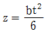
를 사용하여 응력을 구하는 식으로 옳은 것은? (단, P : 굽힘강도, L : 지점간의 거리, Z = 단면계수, b : 시험편의 폭, t : 시험편의 두께)- 6bt^2/4PL
- 6b/4PLt^2
- PL/24bt^2
- 6PL/4bt^2
(정답률: 49%)
2. 전류관통법을 이용하여 건식 및 습식, 형광 및 비형광 등의 자분탐상검사에 대한 종합적인 성능과 강도의 평가 및 비교에 사용되는 시험편은?
- 링 시험편
- 팔각 시험편
- A형 시험편
- B형 시험편
(정답률: 78%)

3. 다음 중 비파괴검사를 실시하는 목적이 아닌 것은?
- 제조 원가의 절감을 위하여
- 제조 공정의 개선을 위하여
- 제품에 대한 신뢰성 향상을 도모하기 위하여
- 제품을 분해 파괴하여 내부결함을 검사하기 위하여
(정답률: 81%)
4. 심냉처리시 시효 변형과 잔류 오스테나이트에 대한 설명 중 틀린 것은?
- 탄소함유량이 많으면 잔류 오스테나이트량이 많아진다.
- 물 담금질한 것은 기름·담금질한 것보다 잔류 오스테나이트량이 많다.
- 담금질 온도가 높으면 잔류 오스테나이트량이 많아진다.
- 담금질한 후 바로 심냉처리한 것보다 150℃ 부근에서 뜨임을 행한 후 심냉처리하고 다시 뜨임하면 시효 변형이 적다.
(정답률: 72%)
5. 다음 중 고망간 강에 대한 설명으로 옳은 것은?
- 기지 고직은 시멘타이트이다.
- 열전도성이 좋고 팽창계수가 작아 열변형을 일으키지 않는다.
- 항복점은 낮으나 인장강도는 높게 되어 파괴에 대해서는 높은 인성을 나타낸다.
- 0.9%~1.4%C, 10~15%Mg 이 주성분이며, 용도에따라 Cr, Ni, Mo 등을 첨가한다.
(정답률: 50%)
6. 초음파의 감쇠가 현저할 것으로 판단되는 피검물을 초음파탐상 검사를 하고자 할 때 어느 탐촉자를 사용하여 검사하는 것이 최적인가?
- 1MHz
- 5MHz
- 10MHz
- 100MHz
(정답률: 76%)
7. 다음 중 철강에 사용되는 확산 피복 금속 중 질산, 염산, 묽은 황산에 대한 내식성이 가장 우수한 것은?
- S
- P
- Si
- Pb
(정답률: 67%)
8. 다음 중 정적 시험 방법에 해당되지 않는 것은?
- 인장시험
- 전단시험
- 비틀림시험
- 피로시험
(정답률: 74%)
9. 그림은 재료에 따른 응력-변형곡선이다. A, B의 그림과 합금명이 바르게 연결된 것은?
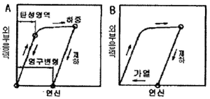
- A : 보통금속재료, B : 형상기억합금
- A : 형상기억합금, B : 초탄성재료
- A : 초탄성재료, B : 보통금속재료
- A : 보통금속재료, B : 초탄성재료
(정답률: 85%)
10. 다음 중 내력을 구하는 방법이 아닌 것은?
- 오프셋법
- 영구연신율법
- 전체연신율법
- 파단연신율법
(정답률: 61%)
11. 탄소강, 특수강 및 각종 공구강 등의 담금질을 목적으로 제조된 2원계 혼합염(중성염)의 성분 중 사용온도가 700~1000℃인 것으로 가장 적합한 거은?
- KNO3 - NaNO2
- BaCI2 - KCI
- NaNO3 - KNO3
- KaCNO - KCI - Na2CO3
(정답률: 72%)
12. 0.3% 탄소강이 상온에서 초석 페라이트(α)와 펄라이트(P)의 양은 약 몇 %인가? (단, 공석점은 0.80%C,α의 고용한도는 0.025%C 이다.)
- α = 77, P = 23
- α = 23, P = 77
- α = 65, P = 35
- α = 35, P = 65
(정답률: 53%)
13. Ni46% - Fe 의 합금으로 열팽찰계수 및 내식성에 있어서 백금의 대용이 되며 전구봉입선 등에 사용되는 것은?
- 문쯔메탈(Muntz metal)
- 플래티나이트(Platinite)
- 모넬메탈(Monel metal)
- 콘스탄탄(Constantan)
(정답률: 85%)
14. 강 용접 이음부의 방사선 투과 시험방법(KS B0845)에 의거하여 맞대기 용접 이음부를 방사선비파괴검사를 하였다. 모재의 두께가 11mm이고 상질을 A급으로 규정할 때 규격에 적합하지 않은 것은?
- 투과사진의 농도가 1.0 이 측정되었다.
- 투과사진에 15형 계조계가 사용되었다.
- 투과사진의 계조계 값이 0.062가 나왔다.
- 투과사진의 투과도계 식별 최소 선지름이 0.25가 보였다.
(정답률: 59%)
15. 금속 시험편의 연마용지(샌드페이퍼)는 실리콘 카바이드로 되어 있다. 다음 중 가장 표면이 고운 연마용지는?
- #200
- #400
- #600
- #800
(정답률: 90%)
16. 다음 중 침탄강이 갖추어야 할 조건으로 옳은 것은?
- 강재는 고탄소강이어야 한다.
- 침탄할 때 고온에서 장시간 가열하여 결정립자가 성장하여야 한다.
- 강재의 주조시 재료 내부에 기공 또는 균열 등이 없어야 한다.
- 경화 층의 경도는 낮고, 마모성 피로성이 우수해야 한다.
(정답률: 68%)
17. 편상 또는 구상흑연을 함유하며, Cr 을 적당히 첨가하여 내마모성이 좋고 해수 중 공식이나 극간부식등의 국부부식이 좋아 발전소나 제철소, 화학장치의 Pump Casing, Impeller, Pipe 등에 많이 사용되는 것은?
- Ni-resist
- Duriron
- Al 주철
- Nitensiliron
(정답률: 68%)
18. 탄소가 2.10%, 규소가 0.30% 함유된 주철의 탄소당량은? (단, P%는 무시한다.)
- 1.2%
- 2.2%
- 3.2%
- 4.2%
(정답률: 59%)
19. Fe-C 상태도에서 나타나는 기호와 이에 따른 명칭이 틀린 것은?
- α : 페라이트
- Fe3C : 시멘타이트
- α+Fe3C : 펄라이트
- r+Fe3C : 위드만스테텐
(정답률: 75%)
20. 침탄 담금질시 경도 부족현상이 발생하는 경우가 아닌 것은?
- 침탄량이 부족할 때
- 담금질 온도가 높을 때
- 탈탄이 되었을 때
- 담금질의 냉각속도가 느릴 때
(정답률: 65%)
2과목: 임의 구분
21. 와전류탐상검사에서 시험코일을 시험체에 대한 적용방법에 따라 분류할 때 이에 해당되지 않는 것은?
- 관통형 코일
- 내삽형 코일
- 침투형 코일
- 표면형 코일
(정답률: 62%)
22. 일반적으로 원자가가 2가인 금속산화물을 주성분으로 하는 내화재로 마그네시아와 산화크롬의 양자를 성분으로 하는 내화재는?
- 산성 내화재
- 중성 산화재
- 염기성 산화재
- 호기성 내화재
(정답률: 69%)
23. 자분탐상 검사방법 중 완전 가공제품의 표면검사에 부적합한 것은?
- 코일법
- 극간법
- 프로드법
- 축통전법
(정답률: 54%)
24. 용제제거성 염색 침투탐상 검사의 순서로 옳은 것?
- 전처리 → 후처리 → 침투처리 → 현상처리 → 관찰 → 제거처리
- 전처리 → 제거처리 → 관찰 → 현상처리 → 침투처리 → 후처리
- 전처리 → 침투처리 → 제거처리 → 현상처리 → 관찰 → 후처리
- 전처리 → 침투처리 → 제거처리→ 후처리 → 관찰 → 현상처리
(정답률: 88%)
25. 초음파탐상시험법에서 탐촉자의 주파수 선택에 관한 설명 중 틀린 것은?
- 탐촉자의 주파수가 높을수록 보다 작은 결함을 검출할 수 있다.
- 검사체의 입자가 크거나 흡수가 크면 높은 주파수를 사용한다.
- 분해능을 높이기 위해서는 높은 주파수를 사용한다.
- 입자가 미세한 단조품의 탐상주파수는 2~6MHz 범위가 적당하다.
(정답률: 45%)
26. 강에서 인(P) 및 호아(S) 편석을 육안으로 확인하기 위한 가장 적당한 부식액은?
- 헨(heyn) 부식액
- 아들러(adler) 부식액
- 프라이(fry) 부식액
- 빌레라(villela) 부식액
(정답률: 78%)
27. 공장 자동화의 형태가 아닌 것은?
- 고정 자동화
- 유연 자동화
- 프로그램 가능 자동화
- 이동 자동화
(정답률: 67%)
28. 퀜칭을 잘 하였는데도 경화가 되지 않았다면 그 이유로 적절하지 않은 경우는?
- 불꽃시험을 행하지 않는 경우
- 급냉이 불충분한 경우
- 처리품의 표면이 탈탄되어 있는 경우
- 오스테나이트화 온도가 불충분한 경우
(정답률: 81%)
29. 스테인리스강의 열처리에 관한 설명이 틀린 것은?
- 페라이트계 스테인리스강의 풀림처리는 700~900℃ 가열한 후 공냉한다.
- 마텐자이트계 스테인리스강의 완전풀림 처리는 850~900℃이고, 냉각속도는 30℃/hr 이하로 한다.
- 오스테나이트계 스테인리스강의 용체화처리는 900~950℃가 적당하며, 유지시간은 두께 25mm당 2시간 정도이다.
- 오트테나이트계 스테인리스강의 내식성 감소는 800~900℃의 온도에서 2~4시간 유지 후 수냉 또는 공냉으로 내식성을 향상시킨다.
(정답률: 63%)
30. 동 및 동합금에 대한 설명으로 틀린 것은?
- 구리와 아연의 평형상태도에서는 6개의 상이 나타난다.
- 구리의 밀도는 약 7.8정도이며, 용융점은 약 670℃정도이다.
- 구리에 아연이 고용한 α상의 결정구조의 면심입방격자이다.
- 연수(軟水)에서 CO2 , 산소의 용해량이 많아지면부식률이 높아진다.
(정답률: 69%)
31. 다음 중 탄소강에서 Mn의 영향으로 옳은 것은?
- 고온에서 결정립 성장을 억제시킨다.
- 연신율과 충격값을 감소시킨다.
- 실온에서 충격치를 저하시켜 상온 취성의 원인이 된다.
- 강재 압연시 균열의 원인이 된다.
(정답률: 74%)
32. 구리 및 구리 합금의 열처리에 대한 설명으로 틀린 것은?
- α+β 황동을 재결정 풀림과 담금질 열처리를 한다.
- α 황동은 700~730℃ 온도에서 재결정 풀림을 한다.
- 순동은 재결정 풀림을 하고, 재결정 온도는 약 270℃ 이다.
- 상온 가공한 황동 제품은 시기균열을 방지하기 위해 고온 풀림을 한다.
(정답률: 40%)
33. 0.8%C 강을 오스테나이트 구역으로 가열한 후 항온 열처리할 때 변태속도가 가장 빠른 부분의 온도는?
- 650℃ 부근
- 550℃ 부근
- 450℃ 부근
- 300℃ 부근
(정답률: 69%)
34. 다음 중 형상기억 합금의 종류가 아닌 것은?
- Al-Cu-Mg 합금
- Ti-Ni 합금
- Cu-Al-Ni 합금
- Cu-Zn-Al 합금
(정답률: 75%)
35. 가스질화법에 대한 설명으로 틀린 것은?
- 철과 질소의 화합물은 Fe2N, Fe3N, Fe4N 등이 있다.
- 암모니아 가스는 순도가 높고 조성변동이 적으며 질화대상 재료에 침식 등이 없어야 한다.
- 질화용강은 질소와 친화력이 강한 Cr, Al, Mo, V등이 함유된 것을 사용한다.
- 질화품은 고경도, 내마모성이 우수하므로 전처리로 열처리가 필요 없다.
(정답률: 69%)
36. 열처리의 냉각 방법의 3형태가 아닌 것은?
- 연속 냉각
- 2단 냉각
- 변태 냉각
- 항온 냉각
(정답률: 78%)
37. 다음 중 연 천인률의 공식으로 옳은 것은?
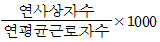
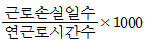
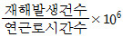
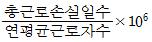
(정답률: 82%)
38. 다음 중 감전방지를 위한 유의사항으로 틀린 것은?
- 전격 방지기를 사용하지 말 것
- 신체, 의복 등에 물기가 없도록 할 것
- 홀더, 케이블, 용접기의 절연과 접속을 완전히 할 것
- 절연이 좋은 장갑과 신발 및 작업복을 사용할 것
(정답률: 85%)
39. 쾌삭강(free cutting steel)에서 피삭성을 향상시키는데 가장 효과적인 원소는?
- Zn
- Pb
- Si
- Sn
(정답률: 78%)
40. 다음 중 비틀림 시험에 대한 설명으로 옳은 것은?
- 비틀림 시험의 주목적은 재료에 대한 강성계수와 비틀림 강도 측정에 있다.
- 비교적 가는 선재의 비틀림 시험에서는 응력을 측정하여 시험 결과를 얻는다.
- 비틀림 시험편은 양단을 고정하기 쉽게 시험부분보다 얇게 만든다.
- 비틀림 각도 측정법은 펜듀럼식, 탄성식, 레버식이 있다.
(정답률: 84%)
3과목: 임의 구분
41. 방사선 투과 시험시 촬영배치 순서가 맞는 것은?
- 선원 → 투과도계 → 시편 → 필름
- 선원 → 시편 → 투과도계 → 필름
- 선원 → 필름 → 투과도계 → 시편
- 선원 → 시편 → 필름 → 투과도계
(정답률: 77%)
42. 다음 중 금속초미립자에 대한 설명으로 틀린 것은?
- 용융점이 금속덩어리보다 낮다.
- 활성이 강하여 여러 가지 화학반응을 일으킨다.
- Fe계 합금 초미립자는 금속덩어리보다 자성이 강하다.
- 저온에서 열저항이 매우 커 열의 부도체이다.
(정답률: 71%)
43. 다음 중 고용체강화에 대한 설명으로 틀린 것은?
- 일반적으로 용매원자의 격자에 용질원자가 고용되면 순금속보다 강한 합금이 된다.
- 용매원자와 용질원자사이의 원자 크기 차이가 작을수록 강화효과는 커진다.
- 일반적으로 용매원자의 격자에 용질원자가 고용되면 순금속보다 강한 합금이 되는 것이 고용체강화이다.
- Cu-Ni합금에서 구리의 강도는 60%Ni이 첨가될 때까지 증가되는 반면 니켈의 강도는 40%Cu가 첨가될때 고용체 강화가 된다.
(정답률: 65%)
44. 비커즈 경도 시험에 대한 설명으로 옳은 것은?
- 비커즈 경도가 250인 경우 HRC250으로 표기 한다.
- 꼭지각이 120도의 다이아몬드 압입자를 사용한다.
- 다이아몬드 피라미드의 중심축과 누르개 부착축 사이의 각도는 0.3도 보다 작아야 한다.
- 기준편의 시험면과 기준편을 받치는 면의 평면도 편차가 최대 0.⑤mm 를 넘어서는 안된다.
(정답률: 69%)
45. 다음 중 크리프 시험에 대한 설명으로 틀린 것은?
- 어떤 시간 후에 크리프가 정하는 최대 응력을 크리프한도라 한다.
- 크리프 3단계 중 1단계는 가속 크리프라 하며, 변율이 점차 증가되는 단계이다.
- 철강 및 경합금 등은 250℃ 이상의 온도가 되어야 크리프 현상이 일어난다.
- 재료에 어떤 하중을 가하고 어떤 온도에서 긴 시간 동안 유지하면 시간의 경과에 따라 스트레인이 증가되는 현상이다.
(정답률: 70%)
46. 무인 반송차(Automatic Guided Vehicle)의 특징을 설명한 것 중 틀린 것은?
- 정지 정밀도를 확보할 수 있다.
- 레이아웃의 자유도가 작다.
- 자기 진단과 컴퓨터 교신이 가능하다.
- 충돌, 추돌 회피 등 자기 제어가 가능하다.
(정답률: 90%)
47. 입자분산 강화금속(PSM)의 제조방법으로 틀린 것은?
- 후드법
- 열분해법
- 표면산화법
- 용융체포화법
(정답률: 68%)
48. 다음 중 주철에 대한 설명으로 틀린 것은?
- 주철의 비중은 C와 Si 등이 많을수록 높아진다.
- 전탄소란 흑연+화합탄소이다.
- 주철의 투자율을 크게 하기 위해서는 화합 탄소를 적게 해야 한다.
- 흑연의 양이 적어 탄소와 화합 탄소로 이루어진 경우 단면이 흰색을 띤 주철을 백주철이라고 한다.
(정답률: 70%)
49. 공기 압축기 중 스크루식 압축기의 특징으로 틀린 것은?
- 액동이 있으며, 큰 공기 탱크가 필요하다.
- 고속회전이 가능하고 진동이 적다.
- 저주파 소음이 적고 소음제거가 용이하다.
- 섭동 부분이 적으므로 무급유가 가능하다.
(정답률: 73%)
50. 금속 조직 시험을 하기 전에 시험편의 준비 순서로 옳은 것은?
- 마운팅 → 시험편 채취 → 폴리싱 → 부식 → 세척
- 마운팅 → 시험편 채취 → 부식 → 세척 → 폴리싱
- 시험편 채취 → 폴리싱 → 마운팅 → 세척 → 부식
- 시험편 채취 → 마운팅 → 폴리싱 → 세척 → 부식
(정답률: 88%)
51. 마텐자이트(martensite) 조직의 경도가 높은 원인이 아닌 것은?
- 급냉에 의한 내부응력 때문이다.
- 조직의 미세화 때문이다.
- 탄소 원자에 의한 ferrite격자의 강화 때문이다.
- 탄소 원자의 확산 변태 때문이다.
(정답률: 54%)
52. 유압 에너지를 직선왕복 운동으로 변환하는 기기는?
- 유압회로모터
- 유압실린더
- 유압밸브
- 베인펌프
(정답률: 81%)
53. 알루미늄 및 그 합금의 질별 기호와 기호에 대한 설명이 옳게 짝지어진 것은?
- W : 용체화 처리한 것
- O : 가공 경화만 한 것
- H1 : 고온 가공에서 냉각 후 자연 시효시킨 것
- T1 : 가공 경화 후 안정화 처리한 것
(정답률: 69%)
54. 최대하중이 4690kgf 이고 인장시험편의 지름이 14mm 일 때의 인장강도는 약 몇 kgf/mm2 인가?
- 25
- 30
- 35
- 40
(정답률: 65%)
55. 예방보전(Preventive Maintenance)의 효과로 보기로 가장거리가 먼 것은?
- 기계의 수리비용이 감소한다.
- 생산시스템의 신뢰도가 향상된다.
- 고장으로 인한 중단시간이 감소한다.
- 예비기계를 보유해야 할 필요성이 증가한다.
(정답률: 91%)
56. 계수 규준형 샘플링 검사의 OC 곡선에서 좋은 로트를 합격시키는 확률을 뜻하는 것은? (단, α 는 제1종과오, β 는 제2종과오이다.)
- α
- β
- 1-α
- 1-β
(정답률: 73%)
57. 다음 중 통계량의 기호에 속하지 않는 것은?
- σ
- R
- s
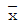
(정답률: 66%)
58. 다음 중 인위적 조절이 필요한 상황에 사용될 수 있는 워크팩터(Work Factor)의 기호가 아닌 것은?
- D
- K
- P
- S
(정답률: 66%)
59. u 관리도의 관리한계선을 구하는 식으로 옳은 것은?
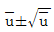
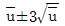
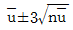
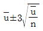
(정답률: 71%)
60. 어떤 회사의 매출액이 80000원, 고정비가 15000원, 변동비가 40000원일 때 손익분기점 매출액은 얼마인가?
- 25000원
- 30000원
- 40000원
- 55000원
(정답률: 67%)